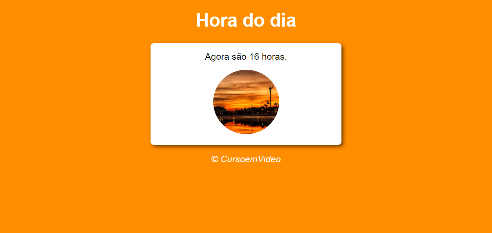
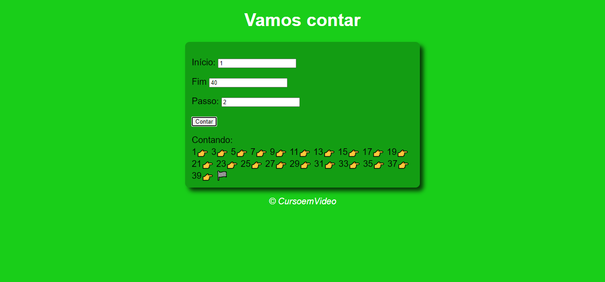
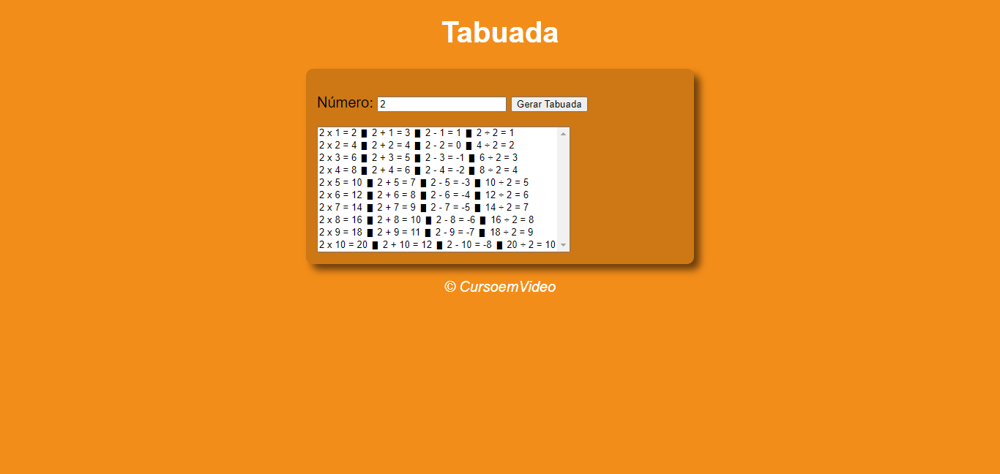
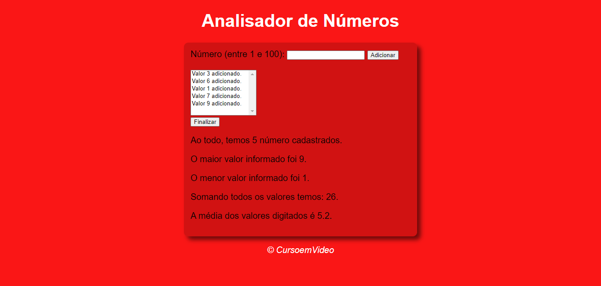

É um relógio que mostra as horas se acordo com o sistema operacional do usuário mostrando uma imagem para dia, tarde, noite e mudando a cor de background conforme muda a imagem. Clique aqui para conferir
É um verificador de idade com base na data de nascimento, mostrando um resultado com uma imagem diferente para cada faixa de idade e sexo. Clique aqui para conferir
É um contador que te mostra uma sequência de números com emojis de acordo com o número inicial, numero final e a quantidade de passo definida pelo usuário. Clique aqui para conferir
Gera uma tabuada do número que o usuário digita. Clique aqui para conferir
Analisa os números que o usuário digita e entrega uma resposta de: o total de números cadastrados, o maior número, o menor número a soma entre eles e a média entre eles. Clique aqui para conferir
